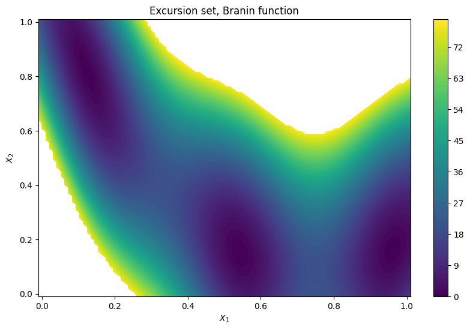
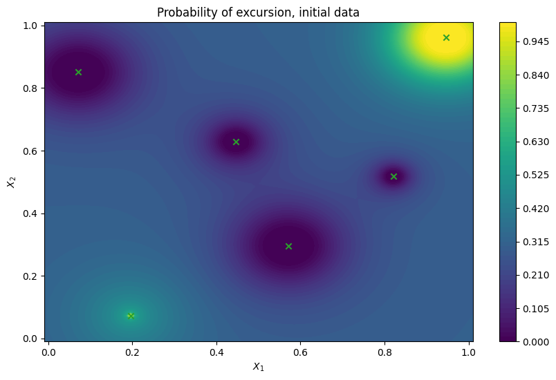
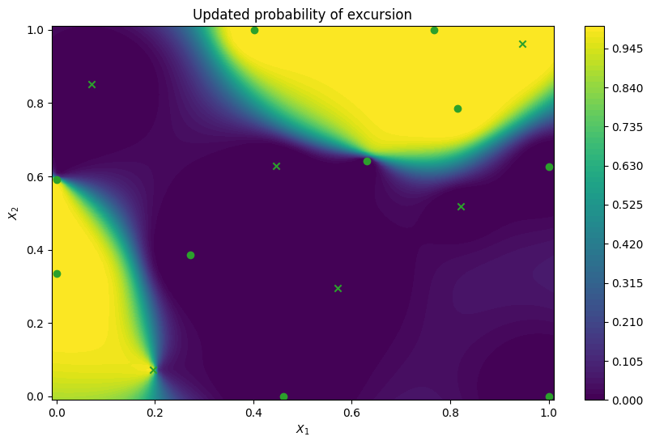
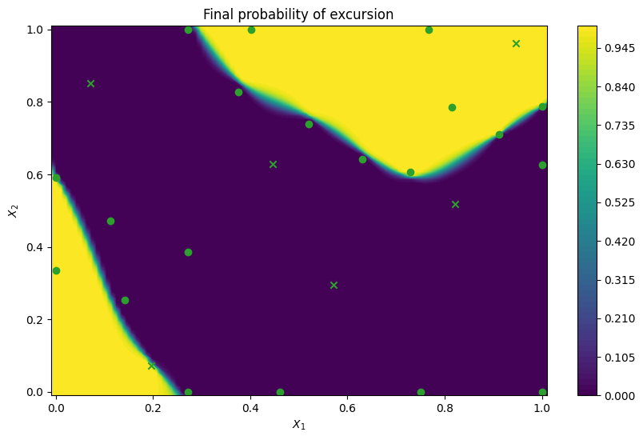
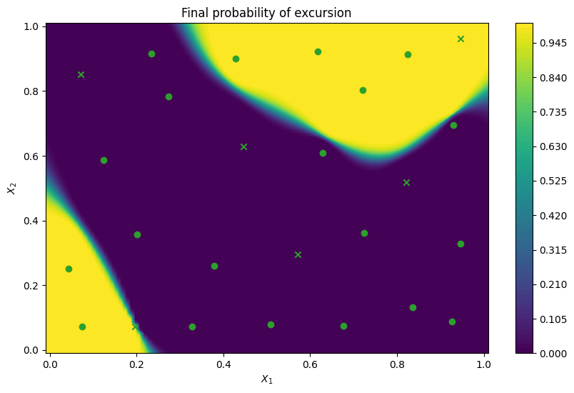
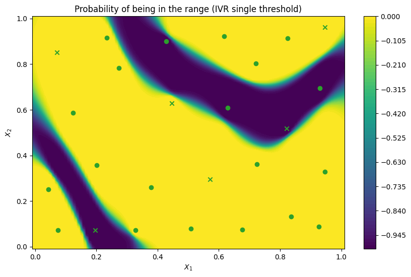
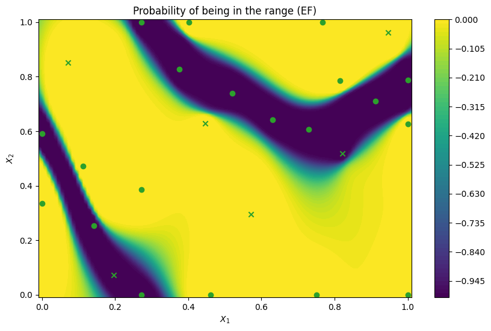

Active learning of feasibility regions#
When designing a system it is important to identify design parameters that may affect the reliability of the system and cause failures, or lead to unsatisfactory performance. Consider designing a communication network that for some design parameters would lead to too long delays for users. A designer of the system would then decide what is the maximum acceptable delay and want to identify a failure region in the parameter space that would lead to longer delays., or conversely, a feasible region with safe performance.
When evaluating the system is expensive (e.g. lengthy computer simulations), identification of the failure region needs to be performed with a limited number of evaluations. Traditional Monte Carlo based methods are not suitable here as they require too many evaluations. Bayesian active learning methods, however, are well suited for the task. Here we show how Trieste can be used to identify failure or feasible regions with the help of acquisition functions designed with this goal in mind.
[1]:
%matplotlib inline
# silence TF warnings and info messages, only print errors
# https://stackoverflow.com/questions/35911252/disable-tensorflow-debugging-information
import os
os.environ["TF_CPP_MIN_LOG_LEVEL"] = "3"
import tensorflow as tf
tf.get_logger().setLevel("ERROR")
import numpy as np
np.random.seed(1793)
tf.random.set_seed(1793)
A toy problem#
Throughout the tutorial we will use the standard Branin function as a stand-in for an expensive-to-evaluate system. We create a failure region by thresholding the value at 80, space with value above 80 is considered a failure region. This region needs to be learned as efficiently as possible by the active learning algorithm.
Note that if we are interested in a feasibility region instead, it is simply a complement of the failure region, space with the value below 80.
We illustrate the thresholded Branin function below, you can note that above the threshold of 80 there are no more values observed.
[2]:
from trieste.objectives import Branin
from trieste.experimental.plotting import plot_function_plotly
branin = Branin.objective
search_space = Branin.search_space
# threshold is arbitrary, but has to be within the range of the function
threshold = 80.0
# define a modified branin function
def thresholded_branin(x):
y = np.array(branin(x))
y[y > threshold] = np.nan
return tf.convert_to_tensor(y.reshape(-1, 1), x.dtype)
# illustrate the thresholded branin function
fig = plot_function_plotly(
thresholded_branin, search_space.lower, search_space.upper
)
fig.show()
2026-06-17 10:46:09,739 INFO util.py:154 -- Missing packages: ['ipywidgets']. Run `pip install -U ipywidgets`, then restart the notebook server for rich notebook output.
Data type cannot be displayed: application/vnd.plotly.v1+json
We start with a small initial dataset where our expensive-to-evaluate function is evaluated on points coming from a space-filling Halton sequence.
[3]:
import trieste
observer = trieste.objectives.utils.mk_observer(branin)
num_initial_points = 6
initial_query_points = search_space.sample_halton(num_initial_points)
initial_data = observer(initial_query_points)
Probabilistic model of the objective function#
Just like in sequential optimization, we use a probabilistic model of the objective function. Acquisition functions will exploit the predictive posterior of the model to identify the failure region. The GPflow models cannot be used directly in our Bayesian optimization routines, so we build a GPflow’s GPR model using Trieste’s convenient model build function build_gpr and pass it to the GaussianProcessRegression wrapper. Note that we set the likelihood variance to a small number
because we are dealing with a noise-free problem.
[4]:
import gpflow
from trieste.models.gpflow import GaussianProcessRegression, build_gpr
gpflow_model = build_gpr(initial_data, search_space, likelihood_variance=1e-7)
model = GaussianProcessRegression(gpflow_model)
Active learning with Expected feasibility acquisition function#
The problem of identifying a failure or feasibility region of a (expensive-to-evaluate) function \(f\) can be formalized as estimating the excursion set, \(\Gamma^* = \{ x \in X: f(x) \ge T\}\), or estimating the contour line, \(C^* = \{ x \in X: f(x) = T\}\), for some threshold \(T\) (see [BGL+12] for more details).
It turns out that Gaussian processes can be used as classifiers for identifying where excursion probability is larger than 1/2 and this idea is used to build many sequential sampling strategies. Here we introduce Expected feasibility acquisition function that implements two related sampling strategies called bichon criterion ([BES+08]) and ranjan criterion ([RBM08]). [BGL+12] provides a common expression for these two criteria:
Here \(m(x)\) and \(s(x)\) are the mean and standard deviation of the predictive posterior of the Gaussian process model. Bichon criterion is obtained when \(\delta = 1\) while ranjan criterion is obtained when \(\delta = 2\). \(\alpha>0\) is another parameter that acts as a percentage of standard deviation of the posterior around the current boundary estimate where we want to sample. The goal is to sample a point with a mean close to the threshold \(T\) and a high variance, so that the positive difference in the equation above is as large as possible.
We now illustrate ExpectedFeasibility acquisition function using the Bichon criterion. Performance for the Ranjan criterion is typically very similar. ExpectedFeasibility takes threshold as an input and has two parameters, alpha and delta following the description above.
Note that even though we use below ExpectedFeasibility with EfficientGlobalOptimization BayesianOptimizer routine, we are actually performing active learning. The only relevant difference between the two is the nature of the acquisition function - optimization ones are designed with the goal of finding the optimum of a function, while active learning ones are designed to learn the function (or some aspect of it, like here).
[5]:
from trieste.acquisition.rule import EfficientGlobalOptimization
from trieste.acquisition.function import ExpectedFeasibility
# Bichon criterion
delta = 1
# set up the acquisition rule and initialize the Bayesian optimizer
acq = ExpectedFeasibility(threshold, delta=delta)
rule = EfficientGlobalOptimization(builder=acq) # type: ignore
bo = trieste.bayesian_optimizer.BayesianOptimizer(observer, search_space)
num_steps = 10
result = bo.optimize(num_steps, initial_data, model, rule)
Optimization completed without errors
Let’s illustrate the results.
To identify the failure or feasibility region we compute the excursion probability using our Gaussian process model:
where \(m(x)\) and \(s(x)\) are the mean and standard deviation of the predictive posterior of the model given the data.
We plot a two-dimensional contour map of our thresholded Branin function as a reference, excursion probability map using the model fitted to the initial data alone, and updated excursion probability map after all the active learning steps.
We first define helper functions for computing excursion probabilities and plotting, and then plot the thresholded Branin function as a reference. White area represents the failure region.
[6]:
from trieste.experimental.plotting import plot_bo_points, plot_function_2d
import tensorflow_probability as tfp
def excursion_probability(x, model, threshold=80):
mean, variance = model.model.predict_f(x)
normal = tfp.distributions.Normal(tf.cast(0, x.dtype), tf.cast(1, x.dtype))
threshold = tf.cast(threshold, x.dtype)
if tf.size(threshold) == 1:
t = (mean - threshold) / tf.sqrt(variance)
return normal.cdf(t)
else:
t0 = (mean - threshold[0]) / tf.sqrt(variance)
t1 = (mean - threshold[1]) / tf.sqrt(variance)
return normal.cdf(t1) - normal.cdf(t0)
def plot_excursion_probability(
title, model=None, query_points=None, threshold=80.0
):
if model is None:
objective_function = thresholded_branin
else:
def objective_function(x):
return excursion_probability(x, model, threshold)
_, ax = plot_function_2d(
objective_function,
search_space.lower - 0.01,
search_space.upper + 0.01,
contour=True,
colorbar=True,
figsize=(10, 6),
title=[title],
xlabel="$X_1$",
ylabel="$X_2$",
fill=True,
)
if query_points is not None:
plot_bo_points(query_points, ax[0, 0], num_initial_points)
plot_excursion_probability("Excursion set, Branin function")

Next we illustrate the excursion probability map using the model fitted to the initial data alone. On the figure below we can see that the failure region boundary has been identified with some accuracy in the upper right corner, but not in the lower left corner. It is also loosely defined, as indicated by a slow decrease and increase away from the 0.5 excursion probability contour.
[7]:
# extracting the data to illustrate the points
dataset = result.try_get_final_dataset()
query_points = dataset.query_points.numpy()
observations = dataset.observations.numpy()
# fitting the model only to the initial data
gpflow_model = build_gpr(initial_data, search_space, likelihood_variance=1e-7)
initial_model = GaussianProcessRegression(gpflow_model)
initial_model.optimize(initial_data)
plot_excursion_probability(
"Probability of excursion, initial data",
initial_model,
query_points[:num_initial_points,],
)

Next we examine an updated excursion probability map after the 10 active learning steps. We can now see that the model is much more accurate and confident, as indicated by a good match with the reference thresholded Branin function and sharp decrease/increase away from the 0.5 excursion probability contour.
[8]:
updated_model = result.try_get_final_model()
plot_excursion_probability(
"Updated probability of excursion", updated_model, query_points
)

We can also examine what would happen if we would continue for many more active learning steps. One would expect that choices would be allocated closer and closer to the boundary, and uncertainty continuing to collapse. Indeed, on the figure below we observe exactly that. With 10 observations more the model is precisely representing the failure region boundary. Most of the additional query points lie close to the threshold line.
[9]:
num_steps = 10
result = bo.optimize(num_steps, dataset, model, rule)
final_model = result.try_get_final_model()
dataset = result.try_get_final_dataset()
query_points = dataset.query_points.numpy()
plot_excursion_probability(
"Final probability of excursion", final_model, query_points
)
Optimization completed without errors

Active learning with Integrated Variance Reduction acquisition function#
An alternative to the ExpectedFeasibility acquisition function is called IntegratedVarianceReduction. This acquisition has the advantage of taking into account reduction of uncertainty in a region of the search space when choosing the next point to sample, instead of considering only the sampling point. This makes it more expensive to compute than ExpectedFeasibility, since it involves computing an integral over a set of integration points. This integration region is determined by
the user, with the integration_points parameter. Another advantage is that IntegratedVarianceReduction can produce batches of points, which becomes useful when parallel evaluations are possible.
Below we perform 10 active learning steps of batch size 2, with IntegratedVarianceReduction acquisition function and same as above plot excursion probability of the final model.
[10]:
from trieste.acquisition.function import IntegratedVarianceReduction
# Choose integration points uniformly over the design space
integration_points = search_space.sample_halton(1000)
acq_ivr = IntegratedVarianceReduction(
integration_points=integration_points,
threshold=threshold,
)
# Set a batch size greater than 1 with the 'num_query_points' parameter
rule_ivr = EfficientGlobalOptimization(builder=acq_ivr, num_query_points=2) # type: ignore
bo = trieste.bayesian_optimizer.BayesianOptimizer(observer, search_space)
num_steps = 10
gpflow_model = build_gpr(initial_data, search_space, likelihood_variance=1e-7)
model = GaussianProcessRegression(gpflow_model)
result_ivr = bo.optimize(num_steps, initial_data, model, rule_ivr)
final_model_ivr = result_ivr.try_get_final_model()
dataset_ivr = result_ivr.try_get_final_dataset()
query_points_ivr = dataset_ivr.query_points.numpy()
plot_excursion_probability(
"Final probability of excursion", final_model_ivr, query_points_ivr
)
Optimization completed without errors

One can also specify a range of thresholds rather than a single value. We can do this by specifying a range with a minimum and a maximum threshold, rather than a single threshold as the threshold parameter. The resulting query points are likely to be more spread out than previously, as now the whole region between the thresholds is aimed to be well estimated, rather than a single line.
[11]:
thresholds = [50.0, 110.0]
acq_range = IntegratedVarianceReduction(
integration_points=integration_points, threshold=thresholds
)
rule_range = EfficientGlobalOptimization(builder=acq_range, num_query_points=2) # type: ignore
gpflow_model = build_gpr(initial_data, search_space, likelihood_variance=1e-7)
model = GaussianProcessRegression(gpflow_model)
result_range = bo.optimize(num_steps, initial_data, model, rule_range)
Optimization completed without errors
We can now illustrate the probability that a point in the search space belongs to the threshold interval rather than the probability that points exceed a single threshold. We compare probability maps obtained with the IntegratedVarianceReduction (IVR) when optimising for the threshold range and for the single threshold at the center of the range, as well as to a probability map for the ExpectedFeasibility function obtained with a single threshold. As expected, the
IntegratedVarianceReduction with threshold range spreads query points a bit more, which leads to a sharper probability boundary.
[12]:
final_model_range = result_range.try_get_final_model()
dataset_range = result_range.try_get_final_dataset()
query_points_range = dataset_range.query_points.numpy()
plot_excursion_probability(
"Probability of being in the range (IVR range of thresholds)",
final_model_range,
query_points_range,
threshold=thresholds,
)
plot_excursion_probability(
"Probability of being in the range (IVR single threshold)",
final_model_ivr,
query_points_ivr,
threshold=thresholds,
)
plot_excursion_probability(
"Probability of being in the range (EF)",
final_model,
query_points,
threshold=thresholds,
)

